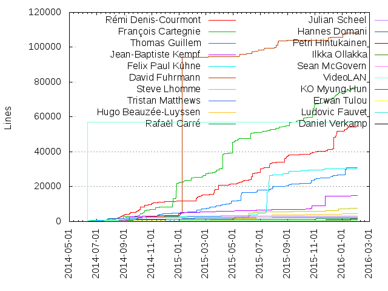
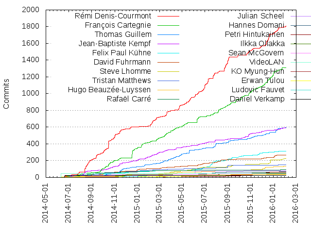

Authors
| Author | Commits (%) | + lines | - lines | First commit | Last commit | Age | Active days | # by commits |
|---|
| Rémi Denis-Courmont | 1806 (28.30%) | 55127 | 57876 | 2013-09-28 | 2016-02-03 | 858 days, 8:20:26 | 313 | 1 |
| François Cartegnie | 1308 (20.50%) | 77018 | 60133 | 2014-06-07 | 2016-01-24 | 596 days, 6:33:50 | 390 | 2 |
| Thomas Guillem | 596 (9.34%) | 31068 | 15726 | 2014-06-26 | 2016-02-02 | 586 days, 4:01:00 | 188 | 3 |
| Jean-Baptiste Kempf | 593 (9.29%) | 14833 | 16979 | 2014-06-14 | 2016-02-02 | 598 days, 1:14:53 | 229 | 4 |
| Felix Paul Kühne | 315 (4.94%) | 30949 | 86500 | 2014-03-12 | 2016-02-02 | 692 days, 3:16:36 | 138 | 5 |
| David Fuhrmann | 267 (4.18%) | 108039 | 126242 | 2014-06-15 | 2016-01-31 | 595 days, 3:36:13 | 100 | 6 |
| Steve Lhomme | 226 (3.54%) | 7598 | 3496 | 2015-02-18 | 2016-02-01 | 347 days, 23:55:23 | 77 | 7 |
| Tristan Matthews | 151 (2.37%) | 2599 | 1142 | 2014-06-26 | 2016-02-03 | 587 days, 1:25:03 | 75 | 8 |
| Hugo Beauzée-Luyssen | 135 (2.12%) | 4400 | 4146 | 2014-06-10 | 2016-02-03 | 602 days, 22:56:56 | 61 | 9 |
| Rafaël Carré | 94 (1.47%) | 1581 | 794 | 2014-06-19 | 2016-02-03 | 594 days, 8:09:05 | 57 | 10 |
| Julian Scheel | 80 (1.25%) | 3173 | 2296 | 2014-08-29 | 2015-10-09 | 406 days, 0:57:35 | 13 | 11 |
| Hannes Domani | 70 (1.10%) | 288 | 75 | 2014-08-11 | 2016-01-16 | 522 days, 17:12:09 | 36 | 12 |
| Petri Hintukainen | 65 (1.02%) | 1263 | 434 | 2015-03-10 | 2016-01-20 | 316 days, 3:10:04 | 33 | 13 |
| Ilkka Ollakka | 55 (0.86%) | 808 | 744 | 2014-03-07 | 2015-10-31 | 603 days, 6:04:29 | 30 | 14 |
| Sean McGovern | 46 (0.72%) | 204 | 94 | 2014-06-24 | 2016-01-21 | 575 days, 21:39:48 | 33 | 15 |
| VideoLAN | 45 (0.71%) | 57062 | 52846 | 2014-06-10 | 2014-06-11 | 2:17:09 | 2 | 16 |
| KO Myung-Hun | 39 (0.61%) | 666 | 213 | 2014-07-30 | 2015-12-17 | 504 days, 19:09:41 | 26 | 17 |
| Erwan Tulou | 35 (0.55%) | 423 | 216 | 2014-06-11 | 2016-01-28 | 596 days, 7:59:16 | 20 | 18 |
| Ludovic Fauvet | 25 (0.39%) | 605 | 215 | 2014-10-06 | 2015-10-14 | 373 days, 2:47:01 | 15 | 19 |
| Daniel Verkamp | 25 (0.39%) | 133 | 30 | 2014-06-15 | 2014-06-20 | 4 days, 10:38:06 | 2 | 20 |
These didn't make it to the top: Pierre Ynard, Felix Abecassis, Salah-Eddin Shaban, Christoph Miebach, Marvin Scholz, Sebastian Ramacher, Julien 'Lta' BALLET, Jean-Paul Saman, Adrien Maglo, Naohiro Koriyama, Vittorio Giovara, Martin Storsjö, Antti Ajanki, Uwe L. Korn, Martell Malone, Anatoliy Anischovich, Damien Erambert, Yuudai Yamashigi, Jonathan Calmels, Jonas Lundqvist, Fabian Yamaguchi, Zhao Zhili, Tobias Güntner, Jean-Yves Avenard, Gleb Pinigin, Diego Elio Pettenò, Daniel Amm, Boris Egorov, Vinson Lee, Tobias Conradi, Sergey Radionov, Emeric Grange, Devin Heitmueller, Denis Charmet, Arjun Sreedharan, Aleksandr Pasechnik, Samuel Martin, Ronald Wright, Romain Bentz, Ramon Gabarró, Rafael Waldo Delgado Doblas, Michael Tänzer, Matthias Keiser, Kaarlo Räihä, Jarrad Whitaker, Frédéric Yhuel, Eugen Geist, Diego Biurrun, Daniel Winzen, Alexander Lakhin, Alex Converse, Adam Leggett, أحمد المحم ودي (Ahmed El-Mahmoudy), Đorđe Vasiljević, Zoran Turalija, Yaron Shahrabani, Valter Correia, Tomáš Chvátal, Timothy B. Terriberry, Thomas Nigro, Thomas De Rocker, Thierry Foucu, Thanakrit Chomphuming, Sébastien Toque, Sveinn í Felli, Sushma Reddy, Suraj Kawade, Steinar H. Gunderson, Shlomi Fish, Savvas Nesseris, Santiago Gimeno, Ricardo Ribalda Delgado, Paweł Stankowski, Pavlov Konstantin, Paulo Vitor Magacho da Silva, Paul Clark, Pau Iranzo, Olivier Aubert, Odd-Arild Kristensen, Moti Zilberman, Mindaugas Baranauskas, Miha Sokolov, Michał Trzebiatowski, Michael Bauer, Maxime Mouchet, Matthias Treydte, Mathieu Malaterre, Martin Srebotnjak, Mark Lee, Marián Hikaník, Mariusz Wasak, Marc Etcheverry, Manuela Silva/Alfredo Silva, Luqman Hakim, Luca Barbato, Lochlin Duperron, Kornel Lesiński, Konstantinos Tsanaktsidis, Konstantin Pavlov, Konstantin K. Beliak, Kazuki Yamaguchi, Kaya Zeren, Kamil Rytarowski, Jérémy Carrier, Julen Ruiz Aizpuru, Jonathan Thambidurai, Jonathan McGowan, John Stebbins, Jed Smith, Jan Ekström, Igor Prokopenkov, Ian Chamberlain, Goran Dokic, Gonçalo Cordeiro, Gina Dobrescu, Gian Marco Sibilla, Geoffrey Métais, Gabriel de Perthuis, Gabor Kelemen, Fumio Nakayama, Fahad Al-Saidi, Fabrizio Gennari, Fabrizio Ge, Dean Lee, David R Robison, David González, Darko Jankovic, Christian Suloway, Chesús Daniel Trigo, Carola Nitz, Carlos Fenollosa, Brion Vibber, Boy van Amstel, Benjamin Drung, Ben Littler, Aputsiaĸ Niels Janussen, Andriy Bandura, Andreas Hartmetz, Andrea Giudiceandrea, Ancelot Mark Pinto, Amanpreet Singh Alam, Alexandre Perraud, Aled Powell, Adrian Haensler, Adnan Memija
Only top 20 authors shown
Only top 20 authors shown
| Month | Author | Commits (%) | Next top 5 | Number of authors |
|---|
| 2016-02 | Rémi Denis-Courmont | 7 (26.92% of 26) | Pierre Ynard, Jean-Baptiste Kempf, Felix Paul Kühne, Tristan Matthews, Thomas Guillem | 11 |
| 2016-01 | Rémi Denis-Courmont | 76 (23.68% of 321) | François Cartegnie, Thomas Guillem, David Fuhrmann, Jean-Baptiste Kempf, Steve Lhomme | 25 |
| 2015-12 | François Cartegnie | 160 (32.59% of 491) | Rémi Denis-Courmont, Steve Lhomme, Thomas Guillem, Hugo Beauzée-Luyssen, Jean-Baptiste Kempf | 23 |
| 2015-11 | François Cartegnie | 71 (25.63% of 277) | Rémi Denis-Courmont, Thomas Guillem, Felix Paul Kühne, Jean-Baptiste Kempf, Petri Hintukainen | 17 |
| 2015-10 | François Cartegnie | 81 (25.96% of 312) | Jean-Baptiste Kempf, Rémi Denis-Courmont, Thomas Guillem, Felix Paul Kühne, Petri Hintukainen | 27 |
| 2015-09 | Rémi Denis-Courmont | 74 (29.72% of 249) | François Cartegnie, Felix Paul Kühne, Thomas Guillem, Steve Lhomme, Jean-Paul Saman | 18 |
| 2015-08 | Rémi Denis-Courmont | 134 (37.02% of 362) | François Cartegnie, David Fuhrmann, Tristan Matthews, Thomas Guillem, Jean-Baptiste Kempf | 16 |
| 2015-07 | Rémi Denis-Courmont | 154 (34.61% of 445) | Felix Paul Kühne, Thomas Guillem, François Cartegnie, Jean-Baptiste Kempf, Hugo Beauzée-Luyssen | 17 |
| 2015-06 | Rémi Denis-Courmont | 143 (37.05% of 386) | François Cartegnie, Julian Scheel, Felix Paul Kühne, Jean-Baptiste Kempf, David Fuhrmann | 20 |
| 2015-05 | Rémi Denis-Courmont | 94 (31.54% of 298) | François Cartegnie, Thomas Guillem, Jean-Baptiste Kempf, Steve Lhomme, David Fuhrmann | 19 |
| 2015-04 | Rémi Denis-Courmont | 66 (24.26% of 272) | Thomas Guillem, François Cartegnie, Jean-Baptiste Kempf, Steve Lhomme, David Fuhrmann | 21 |
| 2015-03 | François Cartegnie | 90 (24.52% of 367) | Rémi Denis-Courmont, Thomas Guillem, Steve Lhomme, Jean-Baptiste Kempf, David Fuhrmann | 26 |
| 2015-02 | Rémi Denis-Courmont | 105 (35.84% of 293) | Jean-Baptiste Kempf, François Cartegnie, Thomas Guillem, Steve Lhomme, Felix Paul Kühne | 25 |
| 2015-01 | François Cartegnie | 69 (28.99% of 238) | Jean-Baptiste Kempf, Thomas Guillem, David Fuhrmann, Julian Scheel, Tristan Matthews | 25 |
| 2014-12 | François Cartegnie | 71 (36.41% of 195) | Jean-Baptiste Kempf, Rémi Denis-Courmont, Thomas Guillem, Felix Paul Kühne, David Fuhrmann | 20 |
| 2014-11 | Rémi Denis-Courmont | 100 (26.39% of 379) | François Cartegnie, Jean-Baptiste Kempf, Thomas Guillem, David Fuhrmann, Tristan Matthews | 27 |
| 2014-10 | Rémi Denis-Courmont | 186 (41.24% of 451) | François Cartegnie, Jean-Baptiste Kempf, Thomas Guillem, David Fuhrmann, Hugo Beauzée-Luyssen | 25 |
| 2014-09 | Rémi Denis-Courmont | 84 (35.44% of 237) | François Cartegnie, Rafaël Carré, Tristan Matthews, Julian Scheel, Hannes Domani | 23 |
| 2014-08 | Rémi Denis-Courmont | 147 (44.68% of 329) | Jean-Baptiste Kempf, François Cartegnie, Tristan Matthews, Hannes Domani, Rafaël Carré | 22 |
| 2014-07 | Rémi Denis-Courmont | 43 (21.29% of 202) | Rafaël Carré, François Cartegnie, Felix Paul Kühne, Tristan Matthews, Thomas Guillem | 25 |
| 2014-06 | VideoLAN | 45 (19.31% of 233) | Daniel Verkamp, Rémi Denis-Courmont, François Cartegnie, David Fuhrmann, Vittorio Giovara | 56 |
| 2014-05 | Ilkka Ollakka | 2 (66.67% of 3) | Adrian Haensler | 2 |
| 2014-03 | Ilkka Ollakka | 7 (77.78% of 9) | Rémi Denis-Courmont, Felix Paul Kühne | 3 |
| 2014-01 | Rémi Denis-Courmont | 1 (100.00% of 1) | | 1 |
| 2013-09 | Rémi Denis-Courmont | 1 (100.00% of 1) | | 1 |
| 2012-07 | Naohiro Koriyama | 1 (100.00% of 1) | | 1 |
| 2012-06 | Naohiro Koriyama | 4 (100.00% of 4) | | 1 |
| Year | Author | Commits (%) | Next top 5 | Number of authors |
|---|
| 2016 | Rémi Denis-Courmont | 83 (23.92% of 347) | François Cartegnie, Thomas Guillem, Jean-Baptiste Kempf, David Fuhrmann, Steve Lhomme | 26 |
| 2015 | Rémi Denis-Courmont | 1117 (27.99% of 3990) | François Cartegnie, Thomas Guillem, Jean-Baptiste Kempf, Felix Paul Kühne, Steve Lhomme | 86 |
| 2014 | Rémi Denis-Courmont | 605 (29.67% of 2039) | François Cartegnie, Jean-Baptiste Kempf, Thomas Guillem, David Fuhrmann, Tristan Matthews | 99 |
| 2013 | Rémi Denis-Courmont | 1 (100.00% of 1) | | 1 |
| 2012 | Naohiro Koriyama | 5 (100.00% of 5) | | 1 |
| Domains | Total (%) |
|---|
| remlab.net | 1806 (28.30%) |
|---|
| videolan.org | 1638 (25.67%) |
|---|
| free.fr | 1309 (20.51%) |
|---|
| gllm.fr | 568 (8.90%) |
|---|
| gmail.com | 367 (5.75%) |
|---|
| videolabs.io | 154 (2.41%) |
|---|
| beauzee.fr | 135 (2.12%) |
|---|
| jusst.de | 80 (1.25%) |
|---|
| yahoo.de | 70 (1.10%) |
|---|
| drv.nu | 25 (0.39%) |
|---|